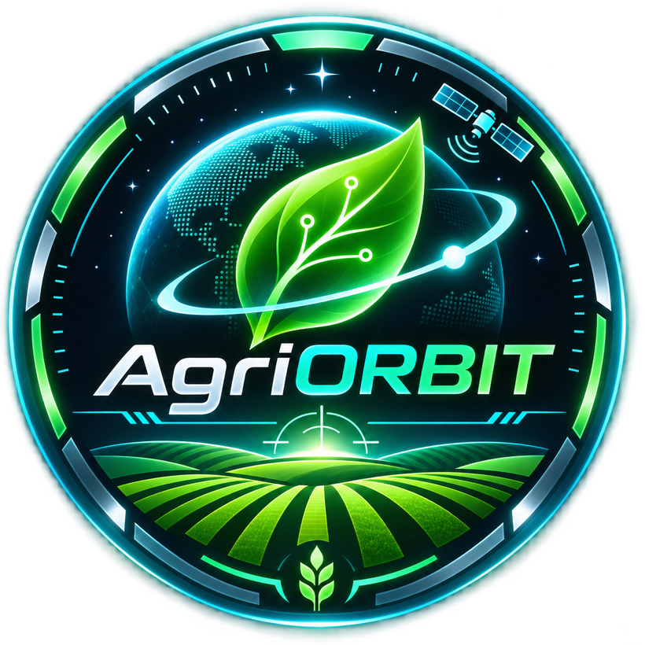

BUILD phase19-true15s-boot-1.9.015-Second Loading Bar Verification
This is a stand-alone test of the same 15-second CSS animation as the main calibration screen. It is not linked to NASA data or rover hardware.
00.0 / 15.0s
When the bar finishes, open the main calibration screen to see it with the seedling.
If this page works but the dashboard doesn’t, an old server or cached dashboard is likely still open. Confirm the address ends in :8020.